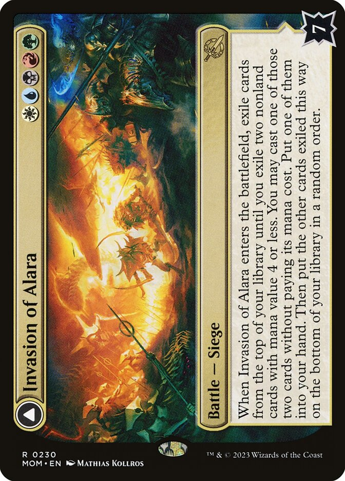
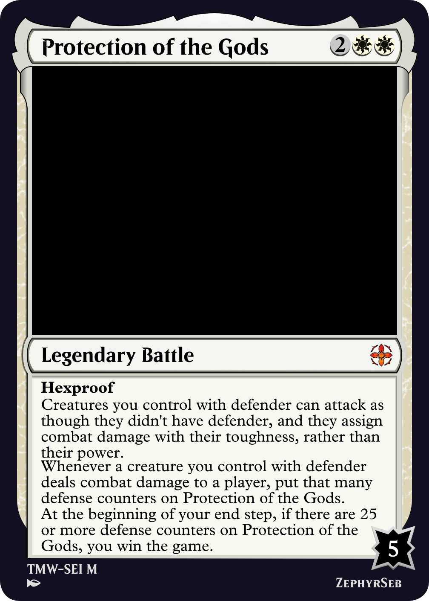
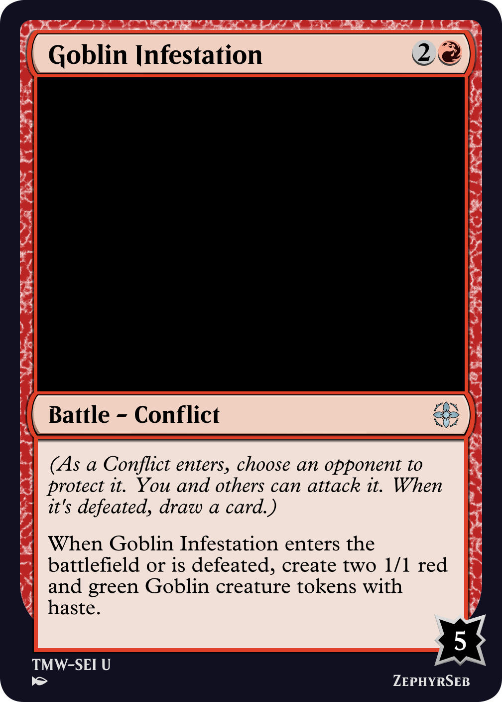
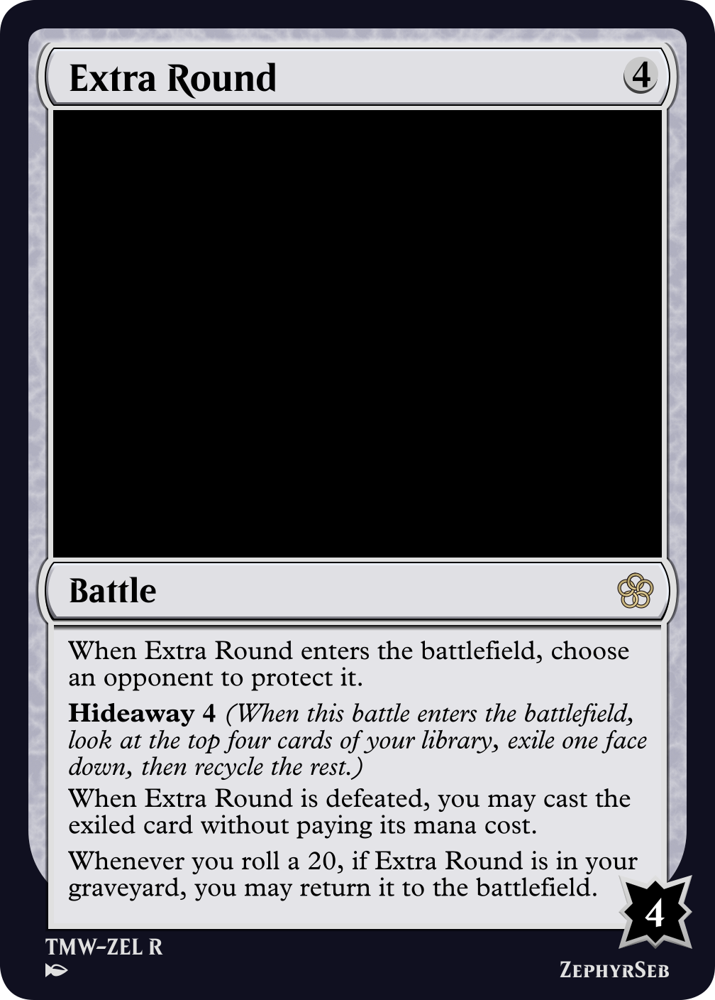
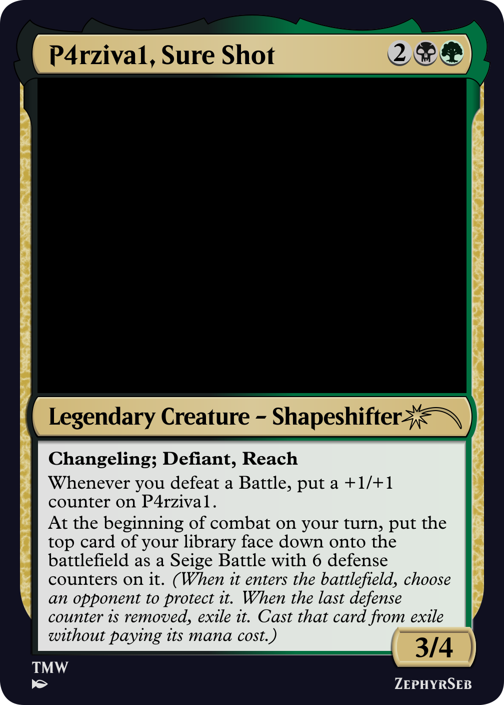

In March of the Machine, we saw a new card type, battle, the first since planeswalkers were released in Lorwyn in 2007. When a battle enters the battlefield, you choose a player to protect the battle (the individual rules of the battle may restrict who that can be). Once a battle is on the battlefield, all players other than that battle's protector can attack the battle. When the battles defense, indicated by the number in the bottom right corner of the card, is reduced to 0, the battle is defeated, and leaves the battlefield.


Invasion of Alara // Awaken the Maelstrom
In this set, all battles had the subtype siege. This meant they were double-faced permanents (DFCs), which were a battle on the front, and a spell on the back. When it enters, the player who cast the spell chooses an opponent to protect the battle, and then tries to defeat it to be able to cast the spell on the back.
There are some restrictions with this design. In particular, sieges require a lot from a set's design, as it isn't easy to throw one or two DFCs into a set, due to printing restrictions. In addition, adding a large number of noncreature cards of a sepcific type to a set requires a robust infastructure, and due a quirk in the rules, battles can't become creatures. This means that many of what would normally be instants and sorceries would need to be battles, which can cause problems if a set is trying to take its design in a different direction.
Other than sieges, battles could show up in sets in smaller quantities, akin to planeswalkers. Many battles that enter under an opponent's protection may use an effect that might otherwise be printed on a sorcery, while battles that enter under your own protection could use effects that would otherwise be enchantments.
The true powers that the battle type has, however, is how it utilizes its ability to be protected by a player other than its owner, and its ability to have defense counters that enter as an innate resource that can be fought over. Below I'll go through some examples of how we can make a truly unique experience out of the battle that is much more difficult to replicate with other card types.
So what might another battle subtype look like? Mark Rosewater has stated, as with any new mechanic, the team at Wizards like to see how a mechanic performs before they use it in future sets, so it might take a couple of years. But we have in fact seen a battle since. In Unknown Event - Chicago, we saw a playtest card, Occupation of Llanowar, with the subtype control point. These are battles that you protect, and give you an enchantment-like effect, but any other player may attack it. If they defeat it, it re-enters the battlefield under their control.

Occupation of Llanowar
While it was an interesting idea for a play test card, and likely led to some fun games at the convention, it certainly requires some finesse to make designs that would be playable in a constructed format. First of all, many control points would need build-around effects - effects that you can only really make the most use out of if you play around it. That way, the opponent won't get much benefit from stealing it. Secondly, since the control point gets exiled and returns to the battlefield when it's defeated, enters-the-battlefield effects become more prevalent; these can either be written to allow you to fight over a resource, or if the effect is symmetrical, allows you to benefit from an opponent defeating your own battle, particularly if you can build around the effect to get more value out of it.

Warrior's Duel
Just imagine trading Warrior's Duel back and forth while you have a token doubling effect on the battlefield.
We've now seen some battle designs that your opponents can protect, but what about battles you'd want to protect? These come with their own challenges. First of all, how do you differentiate a battle from an enchantment? You could design many battles simply by taking an existing enchantment and slapping a defense value on. This doesn't maximize the potential that the battle has, however. One way is to turn the battle into a game of its own. It's a battle, after all, why not fight over it?

Protection of the Gods
In this example (which is quite extreme, admittedly), the battle requires you to attack with your large toughness defenders to increase its defense, giving you the dilemma - do you attack with your creatures to further your game plan, or keep your creatures back to do what they're good at - defending you and your battle. Conversely, your opponent must choose - do they try to attack your life total, or do they try to stop you from winning through Protection of the Gods?
What about further battle subtypes? Creating new subtypess is very useful, as it helps tie rules together to simplify what could otherwise be a complicated card type. For example, we might see a simpler version of a siege, such as this conflict. Confilcts enter under an opponent's protection, and when it's defeated, you draw a card.

Goblin Infestation
Beyond large swaves of battles with a single subtype, the type is full of potential for unique one-off designs. For example, battles work very well with the hideaway mechanic, since they already have an innate trigger to let you cast the hidden away card - namely, being defeated.

Extra Round
I'm always looking for excuses to use face down cards in interesting ways, and there is an interesting parallel between transforming double-faced cards and face down cards. Both types of card grant a transformation, in their own way, which brings us to the question: "What if we had a face-down siege?" While this doesn't technically work within the rules as things stand, it makes for a very unusual mechanic, and when put on a legendary creature, makes for a gimmicky and fun commander.

P4rziva1, Sure Shot
That's all I have to say today, may you fight over many more battles, and hopefully we'll see more of them in the future.
ZephyrSeb